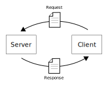
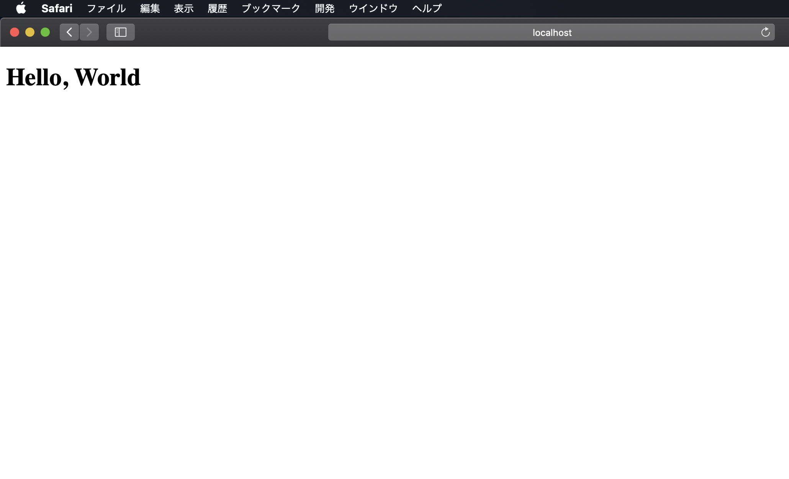

PythonでのSocket通信
やってることはCでやったときと同じである。サーバーとクライアントの通信手順は同じだし、関数名も同じである。しかしCで書いた場合に比べてシンプルに書ける。エラーは例外として投げられるため、自分で書く必要がない。またsockaddr_inなどの構造体が登場することはなく、Pythonでのbind関数とconnect関数の引数に直接アドレス・ポートを指定する。
server.py
前回と同じく、以下の手順で通信を行う。
- listen(待ち受け)用のソケット作成 - socket
- 「どこからの接続を待つのか」「どのポートにて待ち受けするのか」を決める - bind関数の引数
- ソケットにその情報を紐つける - bind
- 実際に待ち受けする - listen
- 接続要求が来たら受け入れる - accept
- 4によって通信用のソケットが得られるので、それを用いてデータのやりとりをする- send/recv
import socket
s = socket.socket(socket.AF_INET, socket.SOCK_STREAM)
s.bind(("", 8000))
s.listen(5)
(sock, addr) = s.accept()
print("Connected by" + str(addr))
sock.send("Hello, World".encode('utf-8'))
sock.close()
s.close()
上のコードを見れば各関数がどんな形で引数をとって、どんな値を返すのかがわかると思う。いくつか補足しておく。
bind
(受け入れアドレス, ポート)というタプルを引数にとる。受け入れアドレスを空文字列にしておけば、どんなアドレスからの接続も受け入れる。つまりCでやったINADDR_ANYと同じ。
encode
Pythonのstring型をそのまま送ることはできないので、byte型に変換する。これはstring.encodeで行える。
sock.send("Hello, World".encode('utf-8'))
client.py
- サーバーとの通信用のソケット作成 - socket
- サーバが待ち受けている宛先を設定 - connectの引数
- 2で設定した宛先に対して接続する - connect
- 1で作ったソケットを用いてデータのやりとりをする。 - send/recv
import socket
sock = socket.socket(socket.AF_INET, socket.SOCK_STREAM)
sock.connect(("localhost", 8000))
data = sock.recv(64)
print(data)
sock.close()
これも2点補足する。
connect
(接続先のアドレス, ポート)というタプルを指定する。接続先にlocalhostを指定すると、127.0.0.1と解釈される。
sock.connect(("localhost", 8000))
recv
引数には受け取る最大バイト数を指定する。
受け取ったデータのサイズが64バイト以上の場合、ソケットから先頭64バイトだけ読み取ることになるので注意。つまり残りのデータがソケットに残っている。大量のデータを受け取ることがあるなら、受け取ったデータのサイズをきちんと調べ、必要なら再度sock.recvを呼び出す。実際のコードはソケットプログラミングHOWTOに載っている。
実行結果
server.pyを起動した後に、client.pyを起動する。
server.pyでは以下の文が出力される。
Connected by('127.0.0.1', 51894)
client.pyでは以下の文が出力される。
なお、serverを連続で起動しようとすると「Address already in use」みたいなエラーが出る。これは前回も説明したようなエラーで、setsockopt関数を利用して解決できる。これについては今回は省略する。30秒くらい待つと復活するようなので我慢する。
with構文の利用
Pythonにはwith構文というものがある。これは例えばファイルのクローズ処理を自動で行ってくれる(注意:with構文自体はファイル操作のためだけの構文ではない)。ソケットでもwith構文が利用できる。
server.py
import socket
with socket.socket(socket.AF_INET, socket.SOCK_STREAM) as s:
s.bind(("", 8000))
s.listen(5)
(sock, addr) = s.accept()
print("Connected by" + str(addr))
with sock:
sock.send("Hello, World".encode('utf-8'))
client.py
import socket
with socket.socket(socket.AF_INET, socket.SOCK_STREAM) as sock:
sock.connect(("localhost", 8000))
data = sock.recv(64)
print(data)
server.py
HTTP通信の基礎知識
PythonにはHTTP通信用のモジュールがあるのでそれを使うべきなのだが、勉強としてSocket通信でHTTP通信っぽいことをしてみる。
HTTP通信の基本は「リクエスト」と「レスポンス」である。クライアントからサーバーに「何かデータをください」などと要求するメッセージを送る。サーバーはそれを受け取って、適切なメッセージを返す。ブラウザ上でページが表示されるのも同じ仕組みで、ここでは「このページのHTMLファイルが欲しい」とブラウザが要求し、サーバーはそれに応じてHTMLファイルを返す。

HTTPプロトコルとは、「サーバーはリクエストを受け取って、レスポンスを返す」「クライアントはリクエストを受け取って、レスポンスを受け取る」「リクエストはこんな書式で、レスポンスはこんな書式にしてね」などの取り決めに過ぎない。具体的な通信方法については下位のプロトコルが決めることであって、TCPやUDPでなくても構わない(もちろん、他に通信方法があればの話だが)。
リクエストもレスポンスも、下位プロトコルにとっては結局ただのデータに過ぎないことに注意。サーバーもクライアントも、単にデータを送受信し、その前後で何か処理をしているに過ぎない。
もう一度まとめると、サーバーは以下の動作を行う。
- リクエストを受け取る
- リクエストを解釈し、適切なレスポンスを送信する
クライアントは以下の動作を行う。
- リクエストを送信する
- レスポンスを受け取る
HTTPサーバーもどきを作る
とりあえずどんなリクエストであっても決まったレスポンスしか返さないHTTP通信もどきを作ってみる。
server.pyを次のようにする。client.pyは作らないことにする。
import socket
response = '''\
HTTP/1.1 200 OK
Content-Type: text/html
<!DOCTYPE html>
<html>
<head>
<meta charset="utf-8">
<title>Page Title</title>
</head>
<body>
<h1>Hello, World</h1>
</body>
</html>
'''
with socket.socket(socket.AF_INET, socket.SOCK_STREAM) as s:
s.bind(("", 8000))
s.listen(5)
(sock, addr) = s.accept()
print("Connected by" + str(addr))
with sock:
request = sock.recv(1024)
print("Request: " + request.decode('utf-8'))
sock.send(response.encode('utf-8'))
レスポンスの書式
responseは「ステータス行」「ヘッダ」「ボディ」で構成される。
ステータス行は以下の部分。HTTP/1.1によってプロトコルとバージョンを識別する。後の数字で「通信に成功したか」「失敗した場合、その原因は何か」を識別する。この数字のことを「ステータスコード」と呼び、後に続くメッセージを「ステータスメッセージ」と呼ぶ。ステータスコード/メッセージの種類は多種多様である。以下の例は200 OKであるが、これは通信に成功したことを表す。例えばページが存在しなかった場合は404 Not Foundが記される。
ヘッダはフィールド名: 値の形式で記述される。フィールドの種類は多種多様である。
例えば以下では、Content-Typeというフィールドを指定している。これはボディがどんな種類のデータであるかを指定し、ここでは「ボディ部はhtmlで書かれている」ことを表している(なぜtext/という接頭辞がついているのかというと、htmlはtextという分類に属しているかららしい)。単なるテキストファイルであることを明示したい場合はtext/plainを指定する。
続いて1行空行を空けた後に、ボディが記述される。今回はhtmlを返すことにする。
<!DOCTYPE html>
<html>
<head>
<meta charset="utf-8">
<title>Page Title</title>
</head>
<body>
<h1>Hello, World</h1>
</body>
</html>\
HTTPクライアントはレスポンスを読み取り、ボディ部から欲しいデータを読み取る。
HTTPサーバもどきとの通信
curlコマンドやブラウザはHTTPクライアントの一種である。試しにこれらを使ってserver.pyと通信してみる。
curlコマンドの場合
server.pyを実行した後、以下のコマンドを実行する。
すると次のメッセージが出力される。curlがHTTPリクエストをserver.pyに送り、レスポンスを受け取った証拠である。
<!DOCTYPE html>
<html>
<head>
<meta charset="utf-8">
<title>Page Title</title>
</head>
<body>
<h1>Hello, World</h1>
</body>
</html>
一方server.pyでは次の文が出力されている。これが、curlが送ってきたリクエストである。本来はこのリクエスト内容をきちんと解釈する必要があるが、HTTPサーバーもどきなのでただ受け取っているだけ。
Request: GET / HTTP/1.1
Host: localhost:8000
User-Agent: curl/7.54.0
Accept: */*
リクエストの書式
リクエストは「リクエスト行」「ヘッダ」「ボディ」で構成される。
リクエスト行はRequest: メソッド パス プロトコル情報の書式で記述される。
メソッドには、サーバーに対してどんな要求をするかを指定する。何か情報をもらうだけならGET、サーバーに情報を送って何かしてほしい場合はPOSTを指定する。他にもPUTやDELETEなどいろいろある。
パスには、サーバーの何に対してリクエストを送るかを指定する。例えば、「localhostにあるhelloディレクトリのfoo.htmlの内容が欲しい」というリクエストを送りたい場合、curlでは次のように送る。
$ curl localhost:8000/hello/foo.html
server.pyでは次のように出力されている。パス部分に注目。
Request: GET /hello/foo.html HTTP/1.1
Host: localhost:8000
User-Agent: curl/7.54.0
Accept: */*
もちろん、「どんなパスが来たらどんな処理をして、どんなレスポンスを送るか」についてはサーバーが判断する。実際、今回の場合パスのことは一切考えていないため、どんなパスでも同じHTML文書が帰ってくる。ちなみにDjangoではこれをurls.pyで行えるように設計されていた。
リクエスト行に続いて、ヘッダが現れる。これはレスポンスのときと同様、フィールド名: 値の書式で表される。
POSTメソッドなどを利用して何かしらの情報をサーバーに送りたい場合、ヘッダの次にボディを書く。今回の例はGETメソッドなので、ボディには何も書かない。
ブラウザを使った場合
今度はブラウザを利用して、server.pyと通信してみる。
server.pyを起動した後、ブラウザからlocalhost:8000にアクセスする。
以下はSafariでアクセスした場合の結果。ブラウザはヘッダからContent-Type: text/htmlを見つけると、ボディ部に書かれたHTML文書を元に描画してくれる。
(2021/3/3追記) Chromeでは動作するが、現バージョンのSafari(14.0.2)では動かない。しばらく読み込んだあと、接続が切断された旨のメッセージが表示されてしまう。
色々実験してみたところ、localhost:8000に1回アクセスするのにSafariが複数回の通信を行なっているのが原因のようだ。
なので、次節のコードであればSafariでも動作する。

server.pyの出力は以下のようになる。curlコマンドに比べ、いろいろなものをヘッダに乗せてリクエストを送っていることが分かる。
Request: GET /hello/ HTTP/1.1
Host: localhost:8000
Accept: text/html,application/xhtml+xml,application/xml;q=0.9,*/*;q=0.8
Upgrade-Insecure-Requests: 1
Cookie: csrftoken=9V4MgzSbODzE32fMurrp8AVhurtRWnJNLI3c1QZClGVdhtjh1tVAGdkskK999aVY
User-Agent: Mozilla/5.0 (Macintosh; Intel Mac OS X 10_14_6) AppleWebKit/605.1.15 (KHTML, like Gecko) Version/13.0.3 Safari/605.1.15
Accept-Language: ja-jp
Accept-Encoding: gzip, deflate
Connection: keep-alive
複数回の通信
現在のserver.pyは、1人のクライアントと通信が終わると、プログラム自体が終了してしまう。これを防ぐのは簡単で、accept以下をwhileループにすれば良い。
import socket
response = '''\
HTTP/1.1 200 OK
Content-Type: text/html
<!DOCTYPE html>
<html>
<head>
<meta charset="utf-8">
<title>Page Title</title>
</head>
<body>
<h1>Hello, World</h1>
</body>
</html>\
'''
with socket.socket(socket.AF_INET, socket.SOCK_STREAM) as s:
s.bind(("", 8000))
s.listen(5)
while True:
(sock, addr) = s.accept()
print("Connected by" + str(addr))
with sock:
request = sock.recv(1024)
print("Request: " + request.decode('utf-8'))
sock.send(response.encode('utf-8'))
server.pyの終了はCtrl+Cで行う。Ctrl+CによってKeyboardInterrupt例外が投げられ、プログラムは終了する。with構文の性質上、例外が投げられたらソケットを閉じてくれる。(ソース:with構文の説明とsocketオブジェクト説明の2段落目)
今回はここまで。